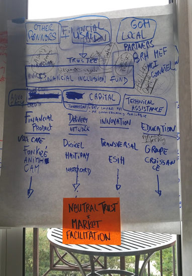
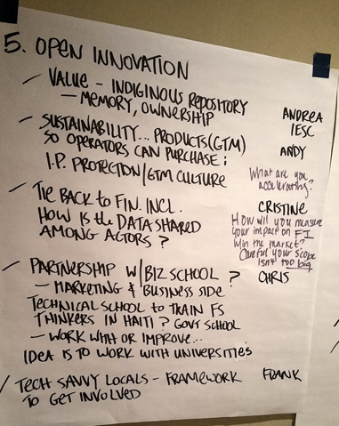

Competitive Landscape
It was a crowded field. Eleven firms were short-listed, ranging from very large ($300m+ annual revenues), well-known Haitian organizations, and smaller organizations like mine. But we had an advantage: 9+ year's experience in Haiti, working with the key stakeholders.
Research
We wanted to create a program that addressed the ecosystem gaps we encountered within the 9 years of working in the sector. First, we defined our parameters.
Although our client asked us to think "blue sky" we knew there would be budget, timeline, and scope limitations. So, we researched our client's goals and strategy in Haiti and the region. This helped us realize that it would probably be focused on agriculture and rural livelihoods.
Next, we had to run this by the project partners, especially Haitian partners as well as the beneficiaries. I traveled to Port-au-Prince for a couple weeks to interview our client, government officials, bankers, telecom operators, and fintech companies.
Prototype
We were a small team at the time - I was the sole full-time business developer with limited access to subject matter experts and administrative support. To accomodate schedules, I held one-to-one brainstorming sessions with program managers and stakeholders that culminated into major insights that I could start investigating more. The main insights were...
Governance: how regulations can limit the use of mobile money.
Literacy: limited knowledge of finance and use of cell phones could hinder fintech growth.
Competition: small business growth was limited, as was the drive to innovate and create in the financial sector.
Testing
Over 18 months, the client and I went through 4 phases of project design - each getting us closer to implementation. Initially, it started with a 2-page idea expression and a co-creation workshop with other bidders (mentioned in the competitive landscape). Once our ideas were better developed, I wrote and submitted a 5-page concept note. Once that was approved, we went through a couple drafts of a full technical proposal with budget and project staff.
I understood that signing the contract depended on USG funding streams and approvals, so we were patient with the process.

